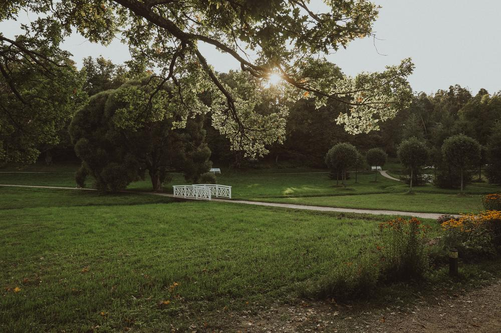

Посетителям
Всё, что нужно знать перед поездкой в Монрепо.
Режим работы
- Май — сентябрь
- 10:00 — 20:00
- Октябрь — апрель
- 10:00 — 18:00
- Выставки
- кроме понедельника
Билеты
- Взрослый
- 1000 руб.
- Студенты, пенсионеры
- льготный
- Дети до 7 лет
- бесплатно
Как добраться
- Из Санкт-Петербурга — поездом «Ласточка» или электричкой с Финляндского вокзала до Выборга.
- Из центра Выборга — на городском автобусе до остановки у парка или пешком через мост на остров Твердыш (около 30–40 минут).
- На машине — по трассе «Скандинавия» (А-181), у входа есть парковка.
Правила посещения
- Ходите по тропам и не забирайтесь на ограждённые скалы.
- Не разводите костры и не оставляйте мусор.
- Собак выгуливайте на поводке.
- Берегите павильоны и скульптуры — это памятники.
